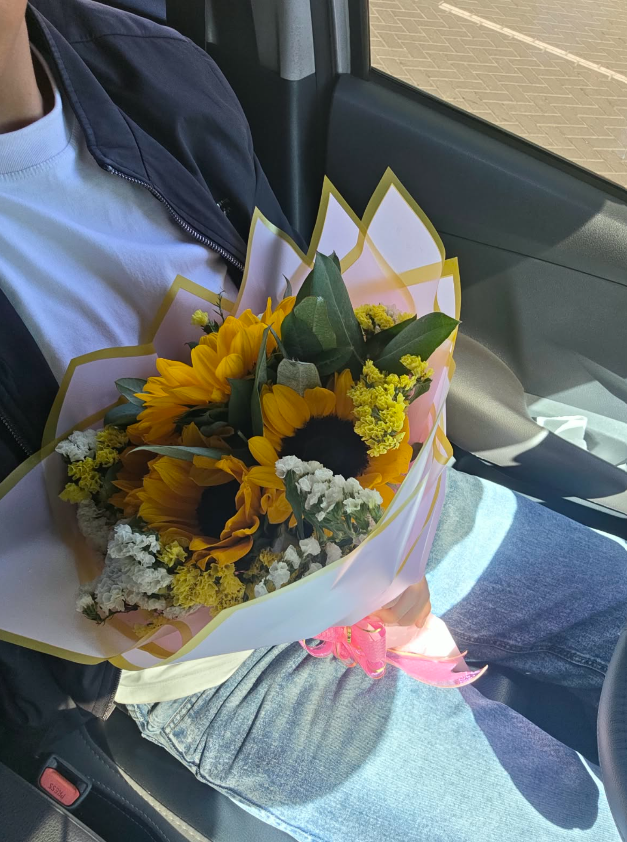

Tu navegador que estás usando no es compatible con el contenido que se va a mostrar. Por favor, usa Google (
Chrome
) o Firefox (
Firefox
)~
Flores Amarillas para el amor de mi vida: Adriana
Eres la razon por la cual mis dias son mejores...
Te amo y te amare para siempre :3.
— I Love You!
Mi amor
por ti
comenzó hace...
Toca el árbol 🌻
✕
